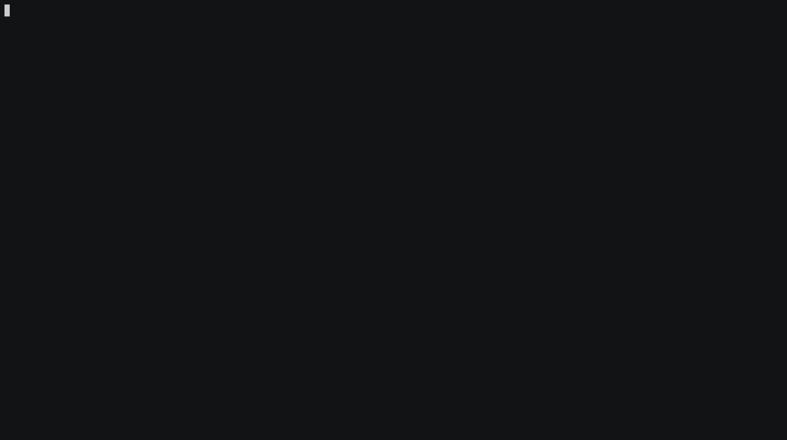

|
armOS
0.1.0
Minimal ARM Operating System for the Raspberry Pi - Documentation generated for Pi 4.
|


|
|
armOS
0.1.0
Minimal ARM Operating System for the Raspberry Pi - Documentation generated for Pi 4.
|
|


Simple ARM Operating System for the Raspberry Pi, supporting Aarch32 and Aarch64 architectures. It supports both Raspberry Pi Zero / Zero W and Raspberry Pi 4.
This project was made for the Embedded Systems course at NTUA 2020-2021.
Quick Links:
This simple Operating System (kernel) is inspired and based on the Linux kernel, especially the ARM specific architecture parts. The features of the kernel are presented in detail in a later section. The main focus of this project, was to dive deep into core OS related concepts (such as the scheduler, drivers, handling processes/memory) and get to know the hardware and low level features of ARM embedded devices such as the Raspberry Pi.
The other focus of this project, was to explore both the Aarch32 and Aarch64 ARM states developing the OS using the ARMv6/ARMv7-a and the ARMv8-a architecture respectively. The 32-bit version is the older and more widespreed architecture in embedded devices, but the 64-bit version is a more powerfull, modern and secure architecture with lots of differences from the old one.
Aarch32 version was tested on the Raspberry Pi Zero W, but it should work with minor changes to the Raspberry Pi 2 and the original Pi.Aarch64 version was tested on the Raspberry Pi 4, but it should work with minor changes to the Raspberry Pi 3.There is proper documentation available for the project in two different formats:
There is detailed documentation of all the source code, generated by Doxygen, describing all the structures and functions of the project.
NOTE: The documentation is generated either for the Rasperry Pi 4 or the Raspberry Pi Zero / Zero W. They have some differences mainly regarding the register addresses, but they are mostly identical.
There are specific details about the implementation of most major parts of the OS, and guides for installing the dependencies and running the OS on a Pi.
The project structure for the source code is the following:
The include/ directory contains definitions of structures and functions:
kernel/: For the core features of the kernel.armv6/ and armv8-a/: For architecture specific routines implemented in ARM assembly code.common/: For common libraries such as string.h and stdlib.h needed for the kernel.peripherals/: For the register's addresses for the peripherals of the devices, in order to provide basic drivers for them.The src/ directory contains the implementations of the functions defined in the include/ directory.
The arch/ directory contains the implementations of the architecture specific routines implemented in ARM assembly code, separated based on the ARM architecture.
The armstub/ directory contains a simple bootloader for the ARMv-8 architecture, in order to boot the kernel in the proper Exception Level.
The current features of the kernel are the following:
Features to be implemented in the near feature:
A screenshot of the kernel in action, after booting up:
A screencast where, we create 3 processes, run them and kill them: 
Showing the available commands of the console, using the help command:
In order to run this kernel in a Raspberry Pi you need the following:
A Rasberry Pi board. One of the following:
screen).An ARM Cross-Compiler Toolchain:
arm-none-eabi-gcc: Download from ARM website - For Linux x86_64 Hostsaarch64-none-elf-gcc Download from ARM website - For Linux x86_64 HostsFor detailed instructions, see the Install Toolchain wiki page.
For detailed instructions, see the Serial Connection wiki page.
For detailed instructions, see the Installation wiki page.
Basic overview of the steps:
Makefile..img, config.txt to SD Card.screen.In order to generate the Doxygen documentation locally, see the Generate Docs wiki page.
For information about the source code, see on Wiki, the Implementation section.
For detailed documentation of all the source code, generated by Doxygen, describing all the structures and functions of the project, see the GitHub Pages hosted site.
A complete list of all the technologies used in this project:
| Technology | Selection |
|---|---|
| Editor | Visual Studio Code |
| Host OS | Ubuntu 20.04 |
| Cross-Compiler | arm-none-eabi-gcc, aarch64-none-elf-gcc |
| Binutils | objdump, objcopy, size, nm |
| Building | Make |
| Scripts | Bash |
| Documentation | Doxygen |
| CI | Travis CI |
| Static Hosting | GitHub Pages |
| Version Control | Git, GitHub |
| Console Emulator | screen |
| Boards | Raspberry Pi 4, Raspberry Pi Zero W |
| Hardware | SD card, USB-to-TTL Serial cable |
This project is licensed under the MIT license. See [LICENSE](LICENSE) for details.
 1.8.17
1.8.17